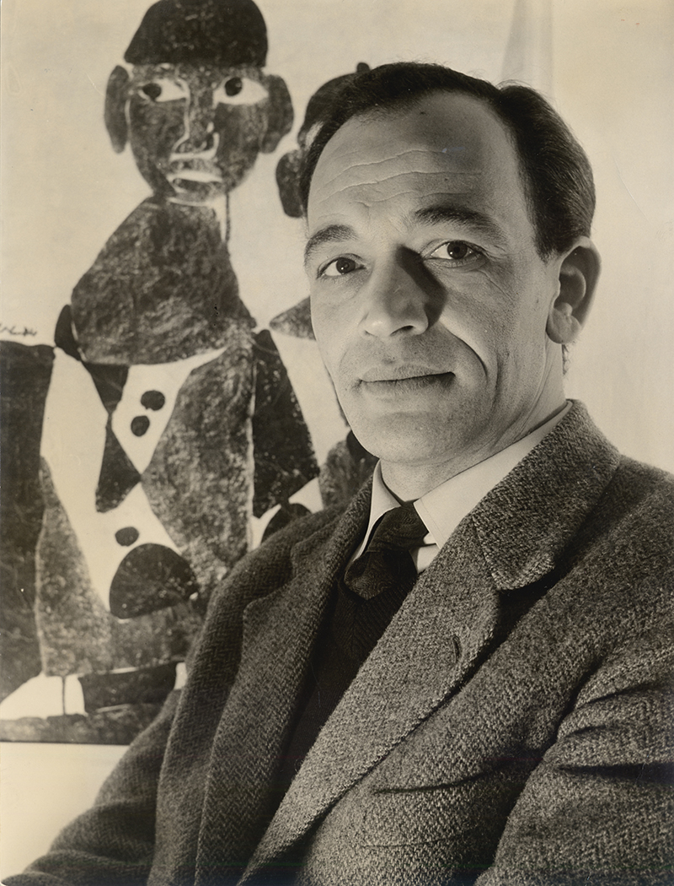

From March 7 to July 12, 2026, the Institut du monde arabe–Tourcoing presents a major retrospective dedicated to Hamed Abdalla (1917–1985), one of the defining figures of modern Egyptian art whose prolific career, spanning more than five decades, reshaped artistic trajectories across Arab, African, and Mediterranean contexts in the postcolonial era.
Bringing together an exceptional body of paintings, drawings, lithographs, and archival materials preserved by the artist’s family, the exhibition retraces the successive phases of Abdalla’s life and work. By placing artworks alongside personal documents, it reconstructs not only the portrait of a singular artist, but also the intellectual and political atmosphere of an entire generation.

From Cairo to the world
Born into a modest rural family and raised in popular Cairo on the island of Rodah, Abdalla was largely self-taught. Very early on, he began teaching painting and drawing, influencing a generation of Egyptian artists including Tahia Halim, Inji Efflatoun, and George Bahgory. Yet he deliberately avoided affiliation with any artistic group or movement, choosing instead to pursue an independent research rooted in lived experience and in the visual heritage of Egypt — Pharaonic art, Coptic iconography, and Islamic artistic traditions.
This early period culminated in the series he titled “Signs of Egypt”, works deeply anchored in the visual culture of his country while engaging directly with its contemporary history. These “signs” traveled beyond Egypt, reaching Paris (notably at Galerie Bernheim-Jeune in 1950), London, and several European cities, marking the beginning of Abdalla’s international presence.
Exile and the “creative word”
Exile opened a new chapter. From Denmark (1956) to Paris (from 1966 onward), Abdalla developed one of the most distinctive dimensions of his practice: the creative word, also described as “word-form” or anthropomorphic writing. In this hybrid language, Arabic letters acquire physical presence; they become bodies, gestures, figures. Meaning and form merge.
“Love” can take the shape of an embrace; “Freedom” becomes a raised, defiant movement.
By destabilizing the boundary between sign and image, Abdalla transcended the opposition between abstraction and figuration, proposing a third path. Throughout his career, he continued to experiment with materials and surfaces — tar and burned aluminum canvases, crumpled paper works, mirrored supports — while engaging political, poetic, and spiritual themes. His practice moves fluidly between geographies and cultures, sustained by a constant commitment to dignity and human agency. For Abdalla, to create was to act.
An expanding international recognition
Today, international recognition of his work continues to expand. His paintings have entered major institutional collections, including the Metropolitan Museum of Art, the Tate Modern, and the Mathaf, alongside the Museum of Modern Egyptian Art in Cairo. The exhibition at the Institut du monde arabe–Tourcoing aligns with this renewed scholarly attention, situating Abdalla’s œuvre within the broader re-examination of global modern art history.
Curator: Nada Majdoub
Scientific Committee: Mogniss Abdalla, Samir Abdalla, Katia Boudoyan, Simon Castel, Mario Choueiry, Morad Montazami